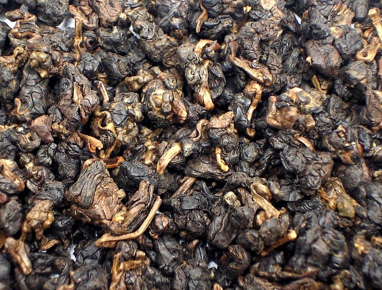

Габа Алишань
Этот необычный улун, родом из высокогорного района провинции Наньтоу (о.Тайвань) за несколько десятилетий производства получил известность, благодаря технологии бескислородной ферментации. Настой у чая насыщенного коньячного оттенка, вкус и аромат сладковато-цветочный с пикантной фруктовой кислинкой. Настой содержит высокое количество гамма-аминомасляной кислоты, что благотворно влияет на работу головного мозга. Напиток особенно подходит для работников умственного труда.
Данный сорт – это дань высоким технологиям по производству чаев на о. Тайвань. «Габа-технология» была впервые применена в конце 80-х годов в Японии. Ключевым моментов в изготовлении чая является бескислородная ферментация. Подвергаясь в течение 8 часов действию азота, процесс окисления в чайных листах практически полностью останавливается, вследствие чего, в готовом продукте выделяется высокое содержание гамма-амино-масляной кислоты (GABA или ГАМК). Изменяется также и цвет чаинок, он становится красновато-золотистым с блестящим отливом. Благодаря уникальности технологии, заваривание Габы Али Шань помогает беспрепятственно высвободить в настой данную кислоту, что невозможно при заваривании других чаев, где кислота также содержится, но выделение ее в заварку должно сопроводиться очень жестким кипячением чайного листа при 127С. Современные исследователи состава чая высоко оценивают воздействие Габы Али Шань, выявляя, что ее употребление способствует понижению артериального давления, и уменьшению головной боли. Незаменим этот чай для людей умственного труда, ведь именно эта гамма-амино-масляная кислота обеспечивает передачу импульсов между нервными клетками. Также этот чай помогает справляться с интоксикацией организма, восстанавливая его после стрессового состояния. Помимо всего прочего, у «Габы» очень пышный ароматический и вкусовой букет. Аромат сухой заварки глубокий, и напоминает вкус варенья. Яркие и сладкие цветочные ноты дополняются легкой кислинкой. Красновато-коричневый настой отлично согревает и уравновешивает. Будучи молодым сортом среди всего существующего многообразия чаев, Габа Али Шань еще не оброс красивыми легендами, но уже завоевал славу, становясь с каждым годом все более востребованным. Габу Али Шань рекомендуется заваривать тайваньским способом «Гун Фу Ча», который позволит раскрыть все достоинства данного вида чая.

Цена: 430 руб.
Этот необычный улун, родом из высокогорного района провинции Наньтоу (о.Тайвань) за несколько десятилетий производства получил известность, благодаря технологии бескислородной ферментации. Настой у чая насыщенного коньячного оттенка, вкус и аромат сладковато-цветочный с пикантной фруктовой кислинкой. Настой содержит высокое количество гамма-аминомасляной кислоты, что благотворно влияет на работу головного мозга. Напиток особенно подходит для работников умственного труда.
Данный сорт – это дань высоким технологиям по производству чаев на о. Тайвань. «Габа-технология» была впервые применена в конце 80-х годов в Японии. Ключевым моментов в изготовлении чая является бескислородная ферментация. Подвергаясь в течение 8 часов действию азота, процесс окисления в чайных листах практически полностью останавливается, вследствие чего, в готовом продукте выделяется высокое содержание гамма-амино-масляной кислоты (GABA или ГАМК). Изменяется также и цвет чаинок, он становится красновато-золотистым с блестящим отливом. Благодаря уникальности технологии, заваривание Габы Али Шань помогает беспрепятственно высвободить в настой данную кислоту, что невозможно при заваривании других чаев, где кислота также содержится, но выделение ее в заварку должно сопроводиться очень жестким кипячением чайного листа при 127С. Современные исследователи состава чая высоко оценивают воздействие Габы Али Шань, выявляя, что ее употребление способствует понижению артериального давления, и уменьшению головной боли. Незаменим этот чай для людей умственного труда, ведь именно эта гамма-амино-масляная кислота обеспечивает передачу импульсов между нервными клетками. Также этот чай помогает справляться с интоксикацией организма, восстанавливая его после стрессового состояния. Помимо всего прочего, у «Габы» очень пышный ароматический и вкусовой букет. Аромат сухой заварки глубокий, и напоминает вкус варенья. Яркие и сладкие цветочные ноты дополняются легкой кислинкой. Красновато-коричневый настой отлично согревает и уравновешивает. Будучи молодым сортом среди всего существующего многообразия чаев, Габа Али Шань еще не оброс красивыми легендами, но уже завоевал славу, становясь с каждым годом все более востребованным. Габу Али Шань рекомендуется заваривать тайваньским способом «Гун Фу Ча», который позволит раскрыть все достоинства данного вида чая.